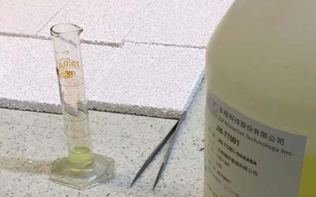

光觸媒加工(設計、合作)步驟：
1. 依客戶所需(討論用途、目標價)；使用環境條件，其抗菌或抗污、除臭....等不同功能是否可行。
2. 依被加工材料或元件，選用最佳之光觸媒原料及最佳節省原料之加工法，以及成本目標價格是否可行。
3. 產品或模組使用光學設計，使其充份發揮其效果。
4. 其它(專利、安規、效能驗證...等)。
世屋光觸媒加工自2002年從日本引進台灣，已具有19年之加工技術與經驗，並榮獲政府研發補助。

光觸媒以氧化鈦為基礎才料，已發展了近20年，其研究領先主體還是以日本為主，在2007年日本在光觸媒的研究上，有多項突破，除此外在德國目前也運用在節能部份，主要是利用親水性原理將室內溫度降溫，減少空調使用的電力除此外在處理廢氣上及在生物科學都有許多的進展，在可見光光觸媒的持續性，其材料也有突破。
2006-2008，於日本明古屋名城大學，理研及產業又將光觸媒薄模技術往前推了一大步，光觸媒經過光照射後，能夠分解有機物，但存在的問題是光觸媒薄膜的壽命短，尤其是用在纖維上或須要透明感及觸感，普遍使用能夠被分解的有機接著劑，或是將光觸媒能力降低之接著法，但目前已開發出新技術，原先疏水性材料(富嘞烯)並且沒有極性，使用0.7奈米之富嘞烯，經特殊處理後衍生之化合物，再加入丙烯酸劇合物，可與光觸媒薄膜增強數倍強度，並且也提高光觸媒之作用。自從2007年起，能源大漲，因此光觸媒之研究更趨向節能之環保，大家熟知氫氣是目前最環保且有效率之能源，但H原子通常是與其它原子結合，因此需要使用電解、光觸媒、燃料重組取得H氣體，而光觸媒又是只需大陽就可以驅動其作用，以此做為基礎研究，以德國、美國、日本，在此領域已有不小的成果，但目前還是屬學術研究部分。

2008發利用可見光即可超親水化的光觸媒氧化鎢薄膜，但離量產化直到2018年才有改善。
一直(2021)年持續改善原料效能，位居領先狀態，也在光觸媒在可見光部份較為穩定，將可突破光觸媒在部份使用上之限制。

目前在材料方面尚要克服技術有量子產生率之提高(目前最高不超過15%)，這部分還是實驗室之數據，不良設計有許多可能連0.1%效能都不到)及光之利用率提升，粘著度之提升而不影響效能..等等。
另外在處理晶圓廠之PGME丙二醇單甲基醚、PGMEA丙二醇單甲基醚酯，單用光觸媒技術可達到單一次分解力具60%以上，但可在設計上使用雞尾酒方式，可達到更理想之效果。